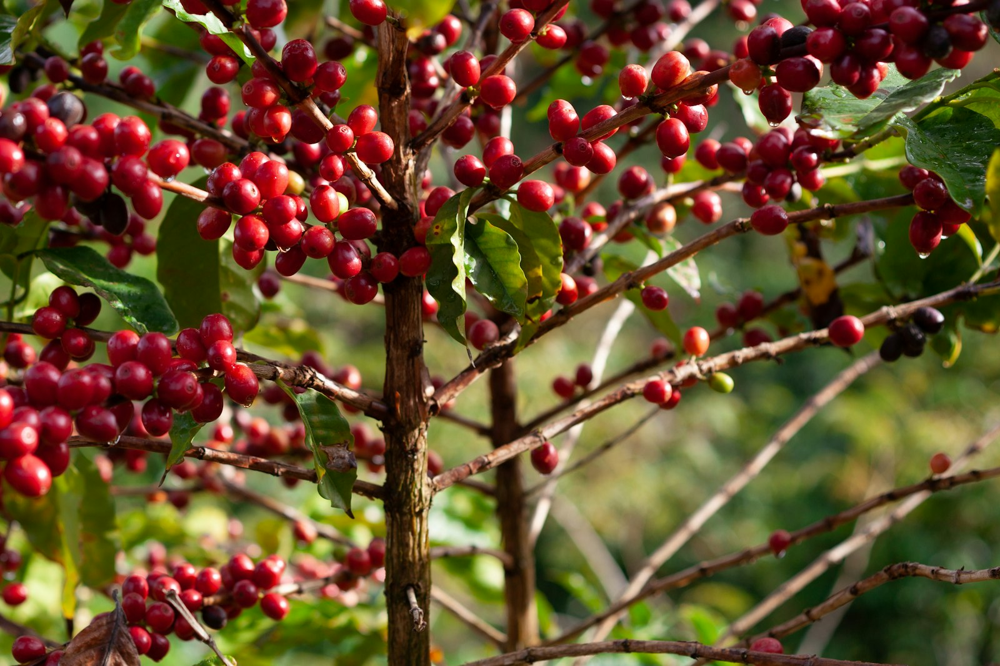

全球产量
178.85百万袋
每袋 60kg
≈ 1,073 万吨 ▲ 较上年 +1.2%
一张可查询的世界咖啡地图——从产地、豆种、处理法到行情与代表名豆。 按风味、用途、价格或产地切片，快速理解每一杯咖啡背后的供给与定价逻辑。

按口味、常用萃取方式、具体喝法和人民币预算做一个轻量推荐。结果只展示品牌与型号，购买前建议复核实时价格、规格和烘焙日期。
左边填完后，这里会自动翻译成选豆方向；你不用再懂烘焙、豆种或处理法。
酸甜平衡、苦感较低、层次清晰。
保留花香、茶感和明亮酸质。
更容易喝到产地本身的风味。
通常更干净，适合新手识别花香和柑橘调。
巴西与越南分别主导 Arabica 与 Robusta 的世界供应；哥伦比亚、埃塞俄比亚、中美洲与云南等高海拔产区则是精品咖啡和产地故事的核心来源。 使用下方按钮按豆种快速过滤。
商业贸易中 99% 以上的咖啡来自这两个物种。Arabica 以风味取胜、需要更严苛的种植条件；Robusta 以高产、高咖啡因、抗病性著称，是速溶与意式拼配的支柱。
学名 Coffea arabica
学名 Coffea canephora
同一品种在不同终端环境下风味差异可以非常显著。下面是 Arabica 与 Robusta 的典型种植要求对照，决定了为什么"高海拔 = 精品"几乎成为行业共识。
处理法决定了豆子的发酵深度、干燥方式与最终风味。同一支咖啡换一种处理法，杯测分数与价格可以相差 5–10 美分以上。
先不用记住期货代码。把价格理解成四件事：生豆大盘、产地稀缺性、烘焙与损耗、品牌和渠道服务。下面用人民币熟豆价格带来判断更直观。
从巴西 Santos 商业基准、越南 Robusta 速溶主力，到 Panama Geisha 拍卖之王——按用途快速筛选。
底部的“定位”是给新手看的购买语境：日常商业豆更稳定便宜，进阶精品豆兼顾风味与性价比，精品豆适合手冲尝鲜，拍卖级精品更像体验款或礼品款。